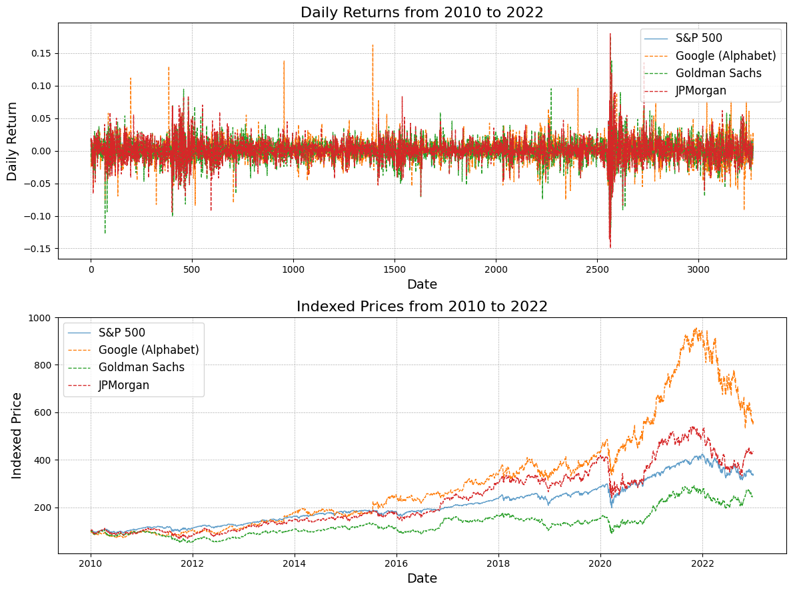

SRISK#
Introduction#
A conditional capital shortfall measure of systemic risk by Brownlees and Engle (2017).
Capital Shortfall#
Capital shortfall is a firm’s required capital reserve minus the firm’s equity. Specifically, capital shortfall of a firm \(i\) on day \(t\) is
where,
\(W_{it}\) is the market value of equity
\(D_{it}\) is the book value of debt
\(A_{it} = W_{it} + D_{it}\) is the value of quasi assets
\(k\) is the prudential capital fraction, set to 8%
A positive capital shortfall \(CS\) means the firm is in distress, i.e., the capital reserve required is larger than the firm’s equity value.
Systemic Event and SRISK#
A systemic event is a market decline below a threshold \(C\) over a time horizon \(h\).
If the multiperiod arithmetic market return between \(t+1\) to \(t+h\) is \(R_{mt+1:t+h}\), then the systemic event is \(\{R_{mt+1:t+h}<C\}\).
Note
\(h=1\) month and \(C=-10\%\) are chosen in Brownlees and Engle (2017).
SRISK of a firm \(i\) is its expected capital shortfall conditional on a systemic event.
The total amount of systemic risk in the financial system is measured as the sum of all firm-level SRISK of the \(N\) institutions in the system with positive SRISK measures.
Note
Institutions with negative SRISK are ignored. In a crisis it is unlikely that surplus capital will be easily mobilized through mergers or loans to support failing firms.
Computation of SRISK#
First, we expand \(CS_{it+h}\),
If debt cannot be renegotiated in case of systemic event,
So we have,
where,
\(LVG_{it}\) is quasi leverage ratio \(LVG_{it}=(D_{it}+W_{it})/W_{it}\).
\(LRMES_{it}\) is Long-Run Marginal Expected Shortfall (LRMES), which captures the expected firm return conditional on a systemic event.
Important
The key step in computing SRISK is estimating the Long-Run Marginal Expected Shortfall (LRMES).
\(LRMES_{it}\) for firm \(i\) at time \(t\) is then defined as
Refer to Long-Run Marginal Expected Shortfall (LRMES) for the steps of estimating LRMES using GJR-GARCH(1,1) - DCC.
References#
Brownlees and Engle (2017), SRISK: A Conditional Capital Shortfall Measure of Systemic Risk, Review of Financial Studies, 30 (1), 48–79.
Glosten, L. R., Jagannathan, R., & Runkle, D. E. (1993), “On the Relation Between the Expected Value and the Volatility of the Nominal Excess Return on Stocks.” The Journal of Finance, 48(5), 1779-1801.
Engle, R. (2002), “Dynamic Conditional Correlation: A Simple Class of Multivariate Generalized Autoregressive Conditional Heteroskedasticity Models.” Journal of Business & Economic Statistics, 20(3), 339-350.
API#
- class frds.measures.SRISK(firm_returns: ndarray, market_returns: ndarray, W: float | ndarray, D: float | ndarray)[source]#
SRISK of firm(s) or market at a given time
- __init__(firm_returns: ndarray, market_returns: ndarray, W: float | ndarray, D: float | ndarray) None[source]#
- Parameters:
firm_returns (np.ndarray) –
(n_days,)array of firm log returns. Can also be(n_day,n_firms)array of multiple firms’ log returns.market_returns (np.ndarray) –
(n_days,)array of market log returnsW (float | np.ndarray) – market value of equity. It can be either a single float value for a firm or a
(n_firms,)array for multiple firms.D (float | np.ndarray) – book value of debt. It can be either a single float value for a firm or a
(n_firms,)array for multiple firms.
Note
If
firm_returnsis a(n_day,n_firms), thenWandDmust be of shape(n_firms,).
- estimate(k=0.08, lrmes_h=22, lrmes_S=10000, lrmes_C=-0.1, lrmes_random_seed=42, aggregate_srisk=False) ndarray | float[source]#
- Parameters:
k (float, optional) – prudential capital factor. Defaults to 8%.
lrmes_h (int, optional) – parameter used to estimate
lrmes(). Prediction horizon. Defaults to 22.lrmes_S (int, optional) – parameter used to estimate LRMES. The number of simulations. Defaults to 10_000.
lrmes_C (float, optional) – parameter used to estimate LRMES. The markdown decline that defines a systemic event. Defaults to -0.1.
lrmes_random_seed (int, optional) – random seed in estimating LRMES. Defaults to 42.
aggregate_srisk (bool, optional) – whether to compute the aggregate SRISK. Defaults to False.
- Returns:
If
aggregate_srisk=False,(n_firms,)array of firm-level SRISK measures. Otherwise, a single float value for aggregate SRISK.- Return type:
np.ndarray | float
Examples#
>>> from frds.datasets import StockReturns
>>> returns = StockReturns.stocks_us
frds.datasets.StockReturns.stocks_us provides daily stock returns of a few U.S.
stocks, including Google, Goldman Sachs, JPMorgan, and the S&P500 index, from 2010 to 2022.
>>> returns.head()
GOOGL GS JPM ^GSPC
Date
2010-01-05 -0.004404 0.017680 0.019370 0.003116
2010-01-06 -0.025209 -0.010673 0.005494 0.000546
2010-01-07 -0.023280 0.019569 0.019809 0.004001
2010-01-08 0.013331 -0.018912 -0.002456 0.002882
2010-01-11 -0.001512 -0.015776 -0.003357 0.001747
>>> len(returns)
3271
Below is a visualization of the returns and indexed prices.
Let’s estimate some SRISKs. I’ll use the last 600 days as the training sample.
>>> gs = returns["GS"].to_numpy()[-600:]
>>> jpm = returns["JPM"].to_numpy()[-600:]
>>> sp500 = returns["^GSPC"].to_numpy()[-600:]
We can estimate the SRISK for Goldman Sachs, assuming it has a market value equity of 100 and debt value of 900.
>>> from frds.measures import SRISK
>>> srisk = SRISK(gs, sp500, W=100.0, D=900.0)
>>> srisk.estimate()
-11.032087743990681
Negative SRISK! So Goldman Sachs with the assumed equity/debt is safe. What if we define a “systemic event” to be a market decline of 5% instead, and assume a even higher leverage?
>>> srisk = SRISK(gs, sp500, W=100.0, D=1500.0)
>>> srisk.estimate(lrmes_C=-0.05)
33.462929665773935
Well, in this extreme case where the bank has a equity to debt ratio of 1/15, and a systemic event defined as market decline of 5% over 22 days, the SRISK of the bank is positive suggesting a capital shortfall.